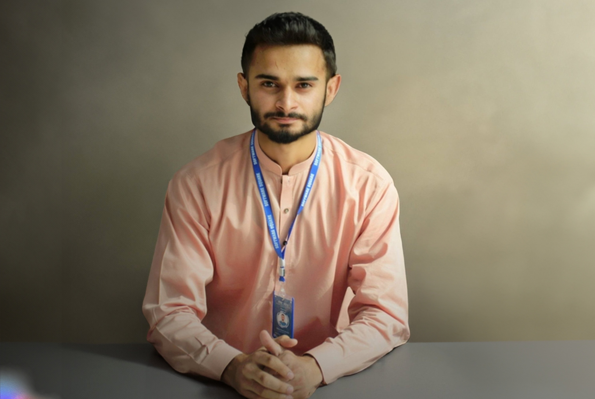
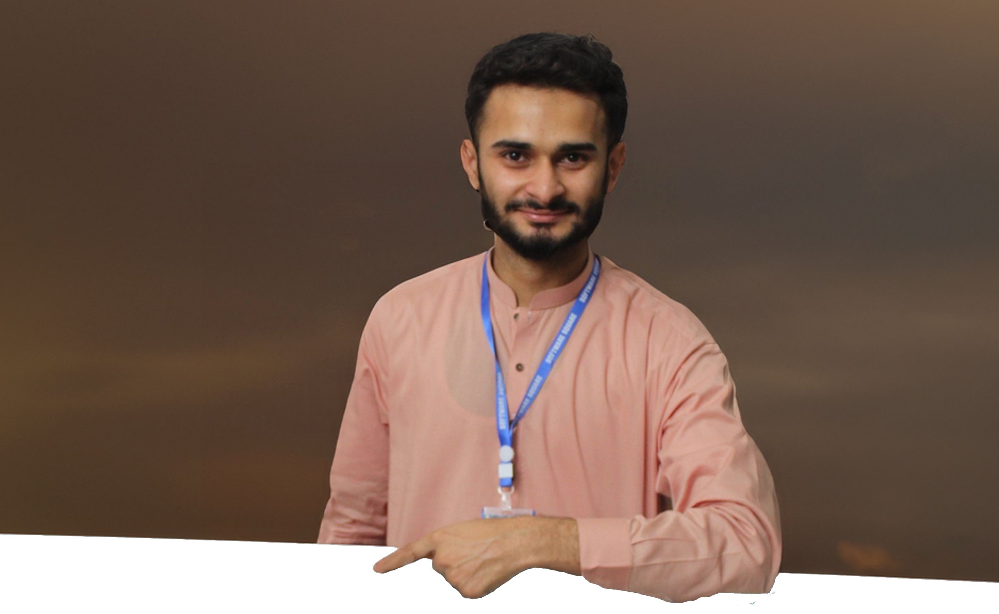

About Me
Hey, I'm Hammad Hassan. I'm an Computer Science Student, 3x Azure Certified, Community Builder, Entrepreneur and SDE Intern Ready to Innovate!".

Hey, I'm Hammad Hassan. I'm an Computer Science Student, 3x Azure Certified, Community Builder, Entrepreneur and SDE Intern Ready to Innovate!".
This page is a little self indulgent, it’s all about me. Hopefully you’ll find it interesting though 🙂.

During my time at District Public School Arifwala, I excelled academically with an A+ grade in Computer Science (88.90%). Simultaneously, I held leadership roles such as Deputy Head Boy and engaged in various activities like debating, cricket captaincy, and community initiatives through the Green Pakistan Movement. These experiences honed my leadership and public speaking skills, emphasizing the importance of both academic excellence and active community involvement.
During my tenure at Aspire College Arifwala for Intermediate studies in Computer Science from 2019 to 2021, I achieved an exceptional A+ grade of 90.63% (997/1100). Alongside academic excellence, I actively contributed as President of the Aspire Debating Society, Prefect at the Proctorial Board, and Captain of the Cricket Team. Engaging in community initiatives such as cleanliness drives with the Green Pakistan Movement and organizing the Weekly Durood-e-Pak Circle reinforced my commitment to holistic development. Notably, I developed a Point of Sale application for the local community in C# (.NET Framework), securing a full fee scholarship, representing the college in debates and speeches, and earning the first position in the entire department. These experiences reinforced the importance of innovation, leadership, and community engagement in my educational journey.
During my enrollment in Udacity's AWS AI & ML Scholarship Program, I completed their top-rated AI/ML Nanodegree with an exceptional A+ grade. This immersive experience equipped me with in-depth knowledge and expertise in cutting-edge artificial intelligence and machine learning technologies. The program spanned from June 2023 to October 2033, providing me with a solid foundation and practical skills essential in these rapidly evolving fields. This certification further solidified my commitment to exploring and contributing to the advancements in AI and ML technologies.
At the University of Engineering and Technology, Lahore, pursuing my Bachelor of Science in Computer Science from 2021 to 2025 was an immersive experience marked by both academic rigor and diverse extracurricular involvement. As the Finance Secretary at Software Square, member of UET Tribune, ACM UET Lahore, and lead at the Hack Club, I actively contributed to various facets of campus life. Additionally, serving as a Campus Ambassador at SayabiDevs, Student Ambassador at AngelHack, and President of MSM UET Lahore expanded my engagement within the academic and tech communities. UET's distinguished rank in Pakistan, diverse engineering branches, Washington Accord accreditation, practical-focused education, state-of-the-art facilities, research-oriented curriculum, and vibrant campus life made it an ideal environment for holistic growth, fostering both academic excellence and personal development.